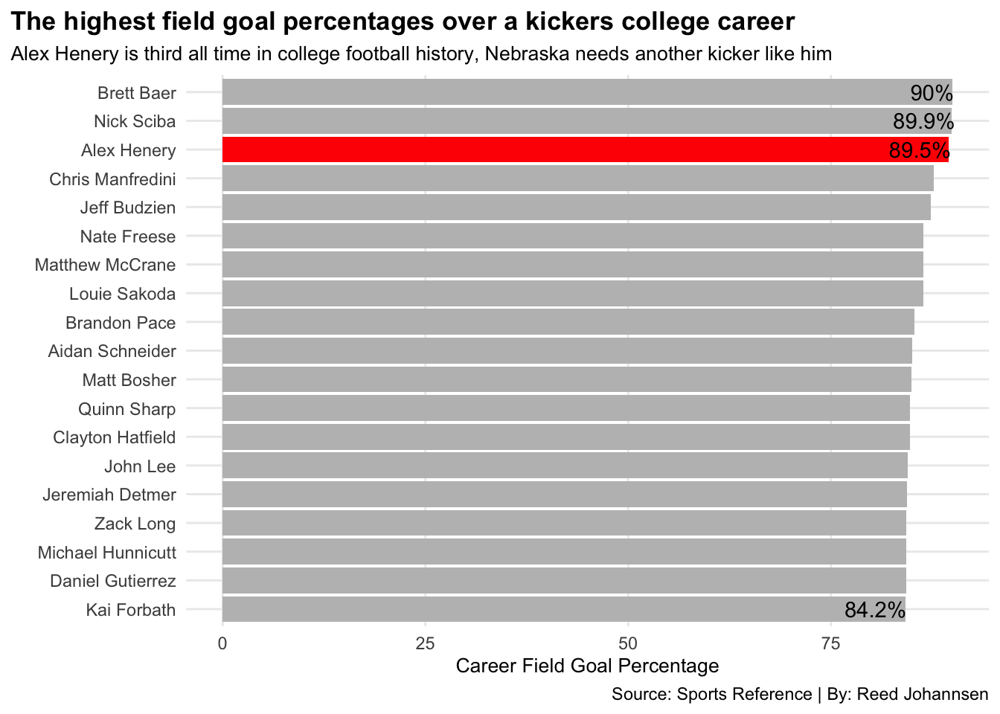

Nebraska will never have another kicker like Alex Henery
nebraska
stats
analysis
Author
Reed Johannsen
Published
November 4, 2022
Being a kicker for Nebraska has been the least-wanted job for the past few seasons. Nebraska has done everything from having the Big Ten kicker of the year to being the laughingstock of college football. It hasn’t always been like this, Nebraska used to be the powerhouse of kicking, with multiple kickers making it to the NFL.
Alex Henery made it to the NFL, but not before being a masterclass at what he does best, kicking. And not just kicking it for fun, kicking it and not missing. Henery was so good at kicking, that he is first in every single kicking category when playing for Nebraska. A total of nine misses is all Henery had at Nebraska, eight field goals and just one extra point, where it hit the goal post.
Code
library(tidyverse)library(ggalt)nu <-read_csv("NebraskaKicking.csv")henery <-read_csv("AlexHenery.csv")alltime <-read_csv("AllTime.csv")kicking <- nu %>%group_by(Player) %>%summarise(FGMade =sum(FGM),XPMade =sum(XPM) ) %>%arrange(desc(FGMade)) %>%filter(XPMade >25, XPMade <216)bigkicking <- kicking %>%pivot_longer(cols=-Player,names_to ="Type",values_to ="TotalMade")kicks <- henery %>%group_by(Player) %>%summarise(FGPercentage =sum(`FG%`),XPPercentage =sum(`XP%`) ) %>%arrange(desc(FGPercentage)) %>%filter(FGPercentage >85)alltimekick <- alltime %>%separate(Player, into=c("Players"), sep="\\*")careerkick <- alltimekick %>%group_by(Players) %>%summarise(FGPercentage =sum(`FG%`),From =sum(From),To =sum(To) ) %>%mutate(Years = (To - From) ) %>%arrange(desc(FGPercentage)) %>%filter(FGPercentage >84, Years >2)nukicking <- bigkicking %>%separate(Player, into=c("Players"), sep="\\*")henerykicks <- kicks %>%separate(Player, into=c("Players"), sep="\\*")ggplot() +geom_hline(yintercept=193, color="blue") +geom_bar(data=nukicking, aes(x=reorder(Players, TotalMade), weight=TotalMade, fill=Type)) +geom_text(aes(x=2, y=183, label="193"), color="blue") +scale_fill_manual(labels =c("Field Goals Made", "Extra Points Made"),values =c("black", "red")) +coord_flip() +labs(title ="The highest scoring kickers to ever play for the Nebraska Cornhuskers",subtitle ="Alex Henery has made more extra points than some have field goals and extra points combined",caption ="Source: Sports Reference | By: Reed Johannsen",x ="",y ="Total Kicks Made" ) +theme_minimal() +theme(plot.title =element_text(size =13, face ="bold"),axis.title =element_text(size =10), plot.subtitle =element_text(size=10), panel.grid.minor =element_blank(),plot.title.position ="plot" )
Alex wasn’t just a star at Nebraska, he was a top kicker in all of college football. His 2010 season stands out most, when he missed one field goal from 51 yards.
The reason being? Blocked. That sounds familiar.
Besides his one hiccup, Henery continued to kick with extreme accuracy. He was the most accurate field goal kicker when paired with a perfect extra point percentage—beating out Justin Tucker, who is one of the most accurate kickers in NFL history and holds the record for longest field goal ever, coming in at 66 yards.
Surely being better than the best kicker in the NFL means Alex Henery is a household name himself? Unfortunately not, but we will get to that later.
Code
henery2 <- henerykicks %>%filter(Players =="Alex Henery")ggplot() +geom_dumbbell(data=henerykicks, aes(y=reorder(Players, XPPercentage), x=FGPercentage, xend=XPPercentage),size =2,colour ="gray",colour_x ="black",colour_xend ="red") +labs(x="Difference in field goal (black) and extra point (red) percentage",y="",title="The difference in field goal and extra point percentage ranged for the top kickers",subtitle="Alex Henery was one field goal shy of being perfect in the 2010 season",caption="Source: Sports Reference | By: Reed Johannsen") +theme_minimal() +theme(plot.title =element_text(size =13, face ="bold"),axis.title =element_text(size =10), plot.subtitle =element_text(size=10), panel.grid.minor =element_blank(),plot.title.position ="plot" )
While 2010 may have been Henery’s best kicking performance, the three years leading up were nothing to look past. From 2007 to 2009, Alex would go on to miss only seven total field goals. After his final season at Nebraska, he ended with an 89.5% field goal percentage and would put himself in first place.
If Henery would have made just one more field goal in his career, he would still be in first place overall.
Code
alexhen <- careerkick %>%filter(Players =="Alex Henery")ggplot() +geom_bar(data=careerkick, aes(x=reorder(Players, FGPercentage), weight=FGPercentage, fill="gray")) +geom_bar(data=alexhen, aes(x=reorder(Players, FGPercentage), weight=FGPercentage, fill="red")) +geom_text(aes(x=17, y=86, label="89.5%"), color="black") +geom_text(aes(x=19, y=87.5, label="90%"), color="black") +geom_text(aes(x=18, y=86.5, label="89.9%"), color="black") +geom_text(aes(x=1, y=80.5, label="84.2%"), color="black") +scale_fill_manual(values =c("gray", "red")) +coord_flip() +labs(title ="The highest field goal percentages over a kickers college career",subtitle ="Alex Henery is third all time in college football history, Nebraska needs another kicker like him",caption ="Source: Sports Reference | By: Reed Johannsen",x ="",y ="Career Field Goal Percentage" ) +theme_minimal() +theme(plot.title =element_text(size =13, face ="bold"),axis.title =element_text(size =10), plot.subtitle =element_text(size=10), panel.grid.minor =element_blank(),plot.title.position ="plot",legend.position ="none" )

Alex Henery has proved over the last 15 years why he is one of the best kickers to ever come out of Nebraska, and one of the best to ever do it. He has only been passed twice in 11 since he exited the college football scene, both of those being .4% and .5% better. Kickers seem to come and go nowadays, and I wonder if Nebraska fans will ever see this type of talent again. For now, I will keep reminiscing about 2010.
Alex would end up being drafted by the Philadelphia Eagles in the fourth round of the 2011 NFL draft. He then would then set a new NFL record for field goal accuracy by a rookie kicker. In just his second year as an Eagle, he set a franchise record by making 18 consecutive field goals and went on to extend the record to 22. He would retire in 2014 with an 82.4% field goal percentage.